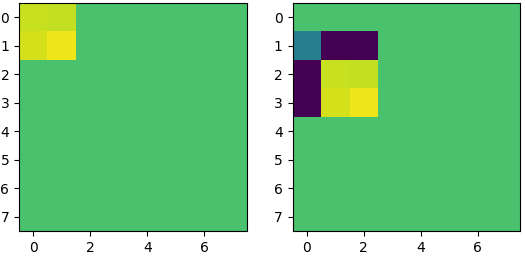
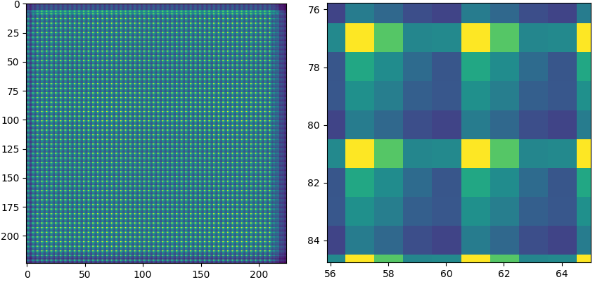
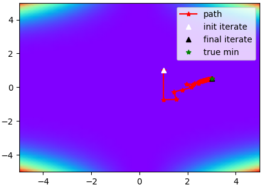
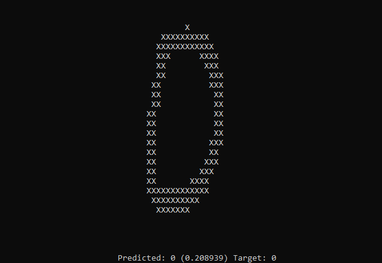

Articles
Text detection and reading
Build a Handwritten Text Recognition System using TensorFlow
This article explains how to build a modern (handwritten) text recognition system. Besides a theoretical introduction, the code of the SimpleHTR repository is discussed. |
FAQ: Build a Handwritten Text Recognition System using TensorFlow
There were some questions regarding the last article which are discussed here: how to use custom datasets, how to detect text on line-level and how to compute a confidence score for the recognized text. |
An Intuitive Explanation of Connectionist Temporal Classification
CTC is an essential part of modern text and speech recognition systems. This article explains how CTC works without hiding the clever ideas it is based on behind complicated formulas. |
Beam Search Decoding in CTC-trained Neural Networks
To get the recognized text from a CTC-trained neural network, its output must be decoded. Beam search decoding is a fast and well-performing algorithm which optionally can integrate a character-level language model. |
Word Beam Search: A CTC Decoding Algorithm
Word beam search is an extension to the vanilla beam search algorithm. It avoids spelling mistakes of words, allows arbitrary numbers and punctuation marks between words and optionally makes use of a word-level language model. This article gives a high-level overview of how the algorithm works. |
Handwritten Word Detector
Documentation of the handwritten word detector implementation. |
Deep learning deep dives
Padding in deep learning modelsThe article presents two experiments that show the influence of padding in deep learning models. |
Pooling in deep learning modelsEven though pooling layers are omnipresent in convolutional neural networks, they can cause problems due to not being shift invariant. |
Quasi Cauchy OptimizerSome notes on the implementation of the quasi cauchy optimizer. It uses a diagonal approximation of the Hessian and therefore is very memory-efficient. |
AdaHessian
AdaHessian is a second order optimizer for deep learning. This article shows how the Hessian approximation is computed by this optimizer. |
A neural network in plain C++The article shows a minimal C++ neural network implementation to distinguish between the handwritten digits 0 and 1. |
Other stuff
Fast Inverse Square Root
Analysis of a simplified version of the famous "fast inverse square root hack" from the 90s. |
GPU Image Processing using OpenCL
Many image processing operations benefit from being computed in parallel. This article shows how to boost dilation and erosion by implementing them for the GPU using OpenCL. |
Binomial filters
Binomial filters are common in the signal and image processing domain. The articles looks at some of their properties. |
Harald Scheidl